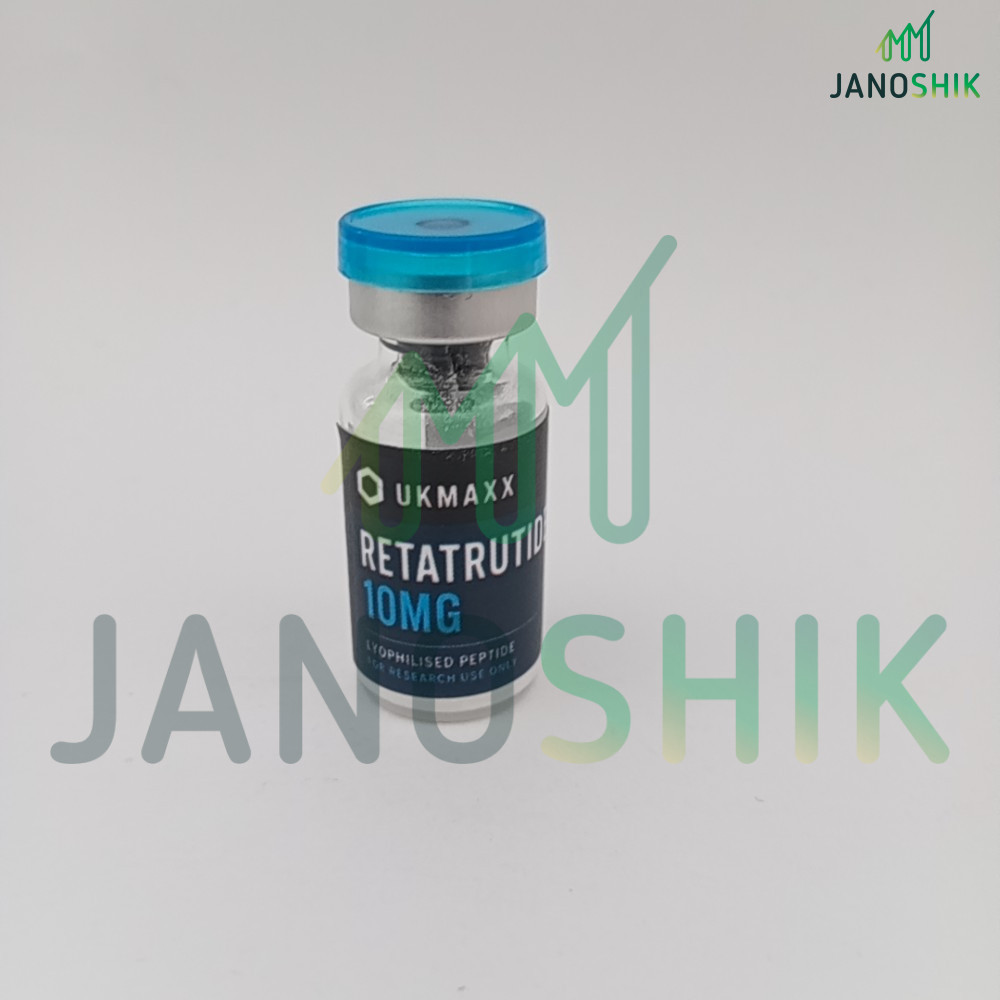

Third-party tested UK peptides.
UKMAXX is built around batch-level verification. Released products are connected to public records showing batch code, lab, method, test date and result, so you can check the details before ordering.

What third-party tested means at UKMAXX
For released peptide and research compound batches, UKMAXX publishes batch records that connect the product page, order batch card and COA checker. The aim is simple: the batch you receive should be traceable back to a public record.
Where applicable, records include independent laboratory data from providers such as Janoshik Analytical, including method, assay or purity result, report date and verification link.
Active, archived and rejected records
The UKMAXX COA checker separates live batches from archived batches and rejected results. Active records show current released stock. Archived records remain visible after a batch sells through. Rejected records show tested batches that did not meet release standards.
This means a COA page should not just be a marketing image. It should act as a permanent verification point for released and historical batches.
Why rejected results are shown
Publishing rejected batch records is uncomfortable, but useful. It shows that UKMAXX does not simply hide failed tests and only display successful results.
If a batch does not meet UKMAXX release standards, it is not released for sale. The rejected record explains the reason so customers can see the decision clearly.
UK stock with tracked dispatch
Current UKMAXX stock is held in the UK and sent using Royal Mail Tracked 24. Working-day orders placed before 2PM are usually dispatched the same day.
For current product availability, use the UK peptides overview or browse the current catalogue.
Third-party tested peptides FAQ
Can I verify a batch before ordering?
Yes. Use the UKMAXX COA checker to view active, archived and rejected batch records before ordering.
Are all batch results successful?
No. If a tested batch fails UKMAXX release standards, it is published as rejected and not released for sale.
Are these products for human consumption?
No. UKMAXX products are supplied strictly for laboratory and in-vitro research use only.